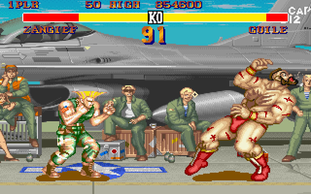
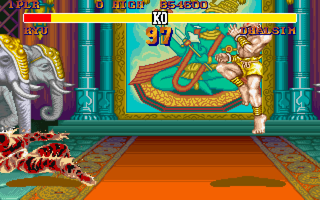
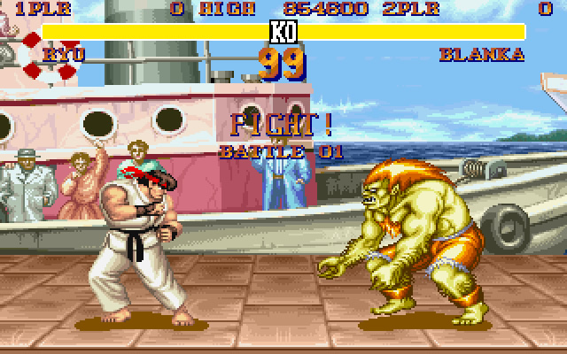

Battle of the Worlds Warriors
Street Fighter II is a competitive fighting game developed by Capcom and released for arcades in 1991. The sequel to the 1987 game Street Fighter, Street Fighter II adds multiple playable characters, each with their own fighting style, and features such as command-based special moves, a six-button configuration, a combo system, and competitive two-player multiplayer. It was the fourteenth Capcom game to use the CP System arcade system board.
In 1992, Street Fighter II was ported to the Super Nintendo Entertainment System (SNES) console, for which it became a longstanding system-seller. Its success led to a series of updated versions (see below). By 1994, Street Fighter II had been played by at least 25 million people in the United States, at home and in arcades. The console ports sold more than 14 million copies worldwide, including 6.3 million copies on SNES, making it Capcom's bestselling game for the next two decades and their bestselling game on a single platform. Adjusted for inflation, all versions of Street Fighter II are estimated to have exceeded $10 billion in gross revenue, making it one of the highest-grossing video games.
 The success of Street Fighter II is credited with popularizing the fighting game genre and sparking a renaissance for the arcade game industry. It appears on several lists of the greatest video games of all time.